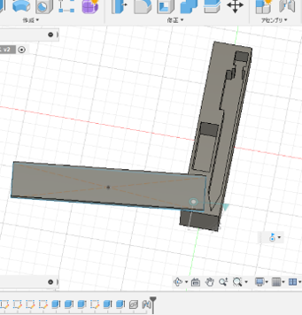

以前ミニマリストに対応したものを考える機会があった。その時は関心がなかったのか全くアイデアが浮かばなかった。
しかしYoutubeを見ていた時おすすめに柿の種のケースを作るという動画が出てきたことによって思いついた。参考動画
以前から自分は筆箱に使わないものばかりはいっていて、シャーペン一本消しゴム一つだけでいいのではないかと考えた。

自分が持っているシャーペンの形にくりぬいたが、そのシャーペンしか使えないという特別感そしてシャーペンと消しゴムしか入らないというシンプルさがよいのではないかと考えています。